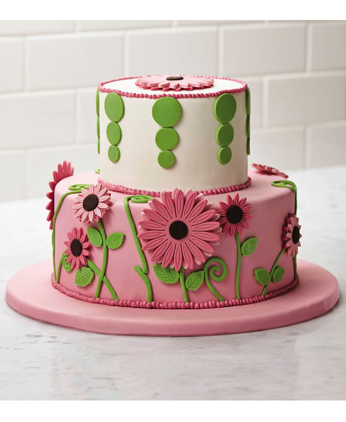

Definir repostería es también un arte, uno basado en preparar y adornar diferentes platos dulces, ambas variables reciben el mismo nivel de importancia, tanto la experiencia que ofrecen los sabores y el impacto visual del postre.
Pasteles,Budines.GalletasBizcochosMasa de pastelIncluso la preparación de postres de crema como las natillas o postres a base de frutas, helados y demás preparaciones frías.
Consulta nuestros trucos de repostería avanzada y gradúate en endulzar la vida a los demás. Conviértete en un maestro pastelero en toda regla con los consejos de repostería que nunca te fallarán. Cuchara en mano ¡y a empezar!
Es un pastel de queso (también conocido como tarta de queso) preparado a base de (como su nombre bien lo indica) queso, cheddar, ricotta o crema de queso, incluye azúcar y en algunos casos huevos, crema de leche o frutas.
Es un tipo de pastel frío preparado en capas que se come principalmente con cuchara, suele ser preparado con bizcocho de soletas humedecidas en café y acompañado de una ligera crema a base de huevos, azúcar y queso mascarpone.

Es de los tipos de pastel más conocidos en Latinoamérica y su nombre describe perfectamente su base culinaria, bañado en tres tipos de leche; evaporada, crema y condensada.

Decorados con glaseado, buttercream o moldeados en fondant, los pasteles de boda contemporáneos son fabulosas creaciones sin límite para la creatividad. Para presentarte las diferentes tendencias en repostería nupcial

Aunque preparar un cumpleaños lleva su trabajo, vale la pena organizarse e invertir un poco de tiempo para preparar una tarta casera, su sabor siempre es mejor y con un poco de cuidado podemos conseguir una vistosa presentación. Seguro que vuestra familia y amigos os reconocerán el esfuerzo.

El pastel de zanahoria fácil es un postre compuesto por un bizcocho de zanahoria y cuyos ingredientes principales son esta hortaliza y la nuez picada, así como una tradicional cobertura dulce de color blanco. Se trata de una tarta de zanahoria fácil que ofrece un contraste de sabores exquisito y poco común, y que podrás rellenar y decorar a tu estilo aunque en esta receta te demos algunas ideas.

¿A quien no le gustan? Una receta de repostería muy popular que admite todo tipo de variaciones, decoraciones y detalles... no iba a pasar desapercibida en los tiempos que corren, claro que no. Los cupcakes son unos pequeños dulces o pastelitos llenos de decoraciones

cupcakes de chocolate, empezaremos a atrevernos con otras magdalenas de este tipo. Tengamos en cuenta que son perfectas tanto para ocasiones especiales, como para todo tipo de celebraciones. Pero también para darnos un capricho o sorprender a nuestra familia o amigos. Nos encantará ver sus caras cuando vean el dulce que hemos preparado, pero mucho más cuando prueben los cupcakes.

Se trata de otro tipo de cupcakes procedentes de la cocina inglesa, igual de esponjosos que siempre pero mucho más vistosos, ¡con el color rojo sangre! Si os apasiona la repostería y queréis sorprender a los niños y adolescentes de casa

La tarta de manzana es un postre que se elabora con masa y manzanas, y que tiene diferentes versiones según el país y los ingredientes que se añaden123. Su origen se remonta al siglo XIV en Europa, donde se cultivaban muchas manzanas y se hacían tartas rellenas

tarta de limón de base crujiente y relleno cremoso, ideal para los amantes de los cítricos.

Cuando en nuestros postres caseros utilizamos fruta de temporada, con su punto de dulzor exacto, quedan tartas tan ricas y estupendas como la que traemos, una deliciosa tarta de durazno fácil y rápida con crema